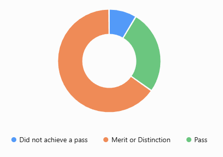

Everything you need to know about T levels
Learn about courses, placements, careers, requirements and student experiences.
What are they?
They are a growing option for students.
27,446 students started a T Level in the 2025-26 academic year, up 7.6% from the previous year.
Typically contain around 80% classroom learning and 20% industry placement. T level courses include:
Exams
T levels use these testing methods to give the final grade:
The course is equivalent to 3 A levels, so the grade received is equivalent to 3 of the received grade. For example A* is equal to A*A*A*.
Why choose them?
1. A guaranteed industry placement of at least 315 hours (45 days) with an employer.
That is far more structured work experience than most A Level students get, and means the student can:
Around one-third of T Level students who get jobs do so with the employer that hosted their placement.
2. Direct access to employers
T Levels were designed with hundreds of employers, and the courses are based on the same occupational standards used in apprenticeships.
As a result, you're often networking with: Managers, Engineers, Software developers, Healthcare professionals, while still at college.
4. More focused study
A T Level lets you spend almost all your time on your career area.
A full T Level usually involves 1,100-1,300 hours of study plus the 315-hour placement, which is generally
more guided learning time than 3 A Levels.
These opportunities help bridge the gap between education and employment, benefiting both students and employers.

Hear from a T-level Student
"I have really enjoyed my course - my favourite unit was building my own small business. This gave me the opportunity to actually see how
business owners operate and how much work goes into it.
The teaching is brilliant and I always felt I could talk to all my teachers about
anything. The college has a really welcoming and comfortable environment."
Jake England
Management and Administration T Level | Strode College
T level Course
Standard Entry Requirments
What careers can they lead into
Digital, Engineering, & Construction Routes Courses
Grade 5 or higher in Maths due to the heavy data, physics, or mathematical programming components.
Broadcast Technician, Mechanical Engineer, Software Developer, Electrician
Health & Science Routes Courses
Grade 4 or 5 specifically in Combined Science (or Separate Sciences)
Healthcare Science Assistant, Forensic Science Technician, Laboratory Technician
Business, Legal, Finance & Accounting Courses:
Strong emphasis is placed on GCSE English (often requiring a Grade 5 for Legal Services due to the heavy writing and comprehension requirements).
Payroll Administrator, Banking Assistant, Paralegal
Education, Agriculture, & Creative Routes Courses
A clean DBS (Disclosure and Barring Service) check is a mandatory non-educational entry requirement to clear you for the 45-day industry placement.
Nursery Practitioner, Crop Production Specialist, Graphic Designer
While requirments may vary between colleges for each specific course, the standard expectation across most courses also include 5 GCSES at grade 4 or above.
What if you don't meet the entry requirements?
If you don't get the required GCSE grades, you can do the T Level Foundation Year (formerly the Transition Programme).
This is a 1-year Level 2 course designed specifically to prepare you for your chosen T Level.
It focuses on building up your technical knowledge, giving you early work experience, and retaking your English and Maths GCSEs so you can step up to the full T Level the following year.
How difficult are t-level courses?

91.4% Pass Rate
The difficulty varies significantly depending on the subject pathway you choose.
The courses rated the hardest by students (lower pass rates) include: manufacturing and Science & Health (lowest for student happiness at ~39%).
The courses rated easiest by students (highest pass rates) include: Education & Early Years (highest pass rates at 97.8%) and Legal Services (97.8% pass rate).
The Dropout Rate - Roughly 1 in 4 students who start a T Level do not finish the two-year course.

65.3% Merit or Distinction
Why do students drop out?
Hear from T-level students and see their stories:
https://www.tlevels.gov.uk/students/student-stories